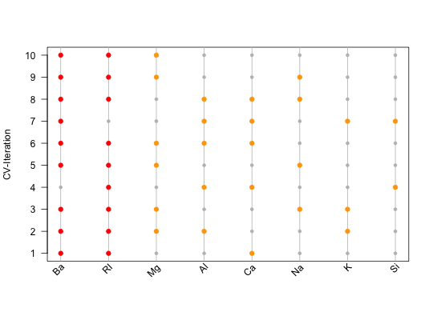

Creates a feature importance plot.
plotFeatureImportance(featureList, control = list(), ...)
| featureList | [ |
|---|---|
| control | [
|
| ... | [any]
Further arguments, which can be passed to |
[plot].
Feature Importance Plot, indicating which feature was used during which iteration.
not_run({ # At the beginning, one needs a list of features, e.g. derived during a # nested feature selection within mlr (see the following 8 steps): library(mlr) library(mlbench) data(Glass) # (1) Create a classification task: classifTask = makeClassifTask(data = Glass, target = "Type") # (2) Define the model (here, a classification tree): lrn = makeLearner(cl = "classif.rpart") # (3) Define the resampling strategy, which is supposed to be used within # each inner loop of the nested feature selection: innerResampling = makeResampleDesc("Holdout") # (4) What kind of feature selection approach should be used? Here, we use a # sequential backward strategy, i.e. starting from a model with all features, # in each step the feature decreasing the performance measure the least is # removed from the model: ctrl = makeFeatSelControlSequential(method = "sbs") # (5) Wrap the original model (see (2)) in order to allow feature selection: wrappedLearner = makeFeatSelWrapper(learner = lrn, resampling = innerResampling, control = ctrl) # (6) Define a resampling strategy for the outer loop. This is necessary in # order to assess whether the selected features depend on the underlying # fold: outerResampling = makeResampleDesc(method = "CV", iters = 10L) # (7) Perform the feature selection: featselResult = resample(learner = wrappedLearner, task = classifTask, resampling = outerResampling, models = TRUE) # (8) Extract the features, which were selected during each iteration of the # outer loop (i.e. during each of the 5 folds of the cross-validation): featureList = lapply(featselResult$models, function(mod) getFeatSelResult(mod)$x) }) ######################################################################## # Now, one could inspect the features manually: featureList#> [[1]] #> [1] "RI" "Ca" "Ba" #> #> [[2]] #> [1] "RI" "Mg" "Al" "K" "Ba" #> #> [[3]] #> [1] "RI" "Na" "Mg" "K" "Ba" #> #> [[4]] #> [1] "RI" "Al" "Si" "Ca" #> #> [[5]] #> [1] "RI" "Na" "Mg" "Ba" #> #> [[6]] #> [1] "RI" "Mg" "Al" "Ca" "Ba" #> #> [[7]] #> [1] "Al" "Si" "K" "Ca" "Ba" #> #> [[8]] #> [1] "RI" "Na" "Al" "Ca" "Ba" #> #> [[9]] #> [1] "RI" "Na" "Mg" "Ba" #> #> [[10]] #> [1] "RI" "Mg" "Ba" #># Alternatively, one might use visual means such as the feature # importance plot: plotFeatureImportance(featureList)